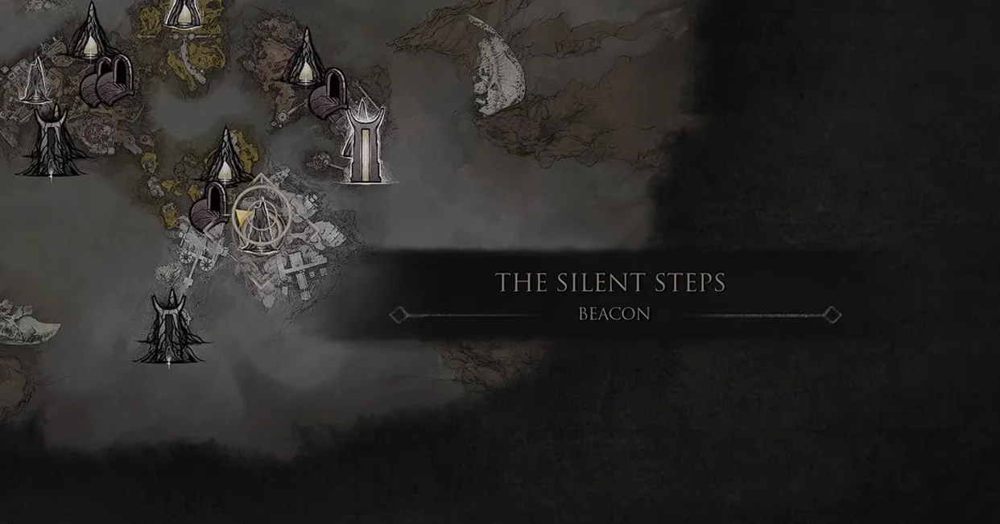
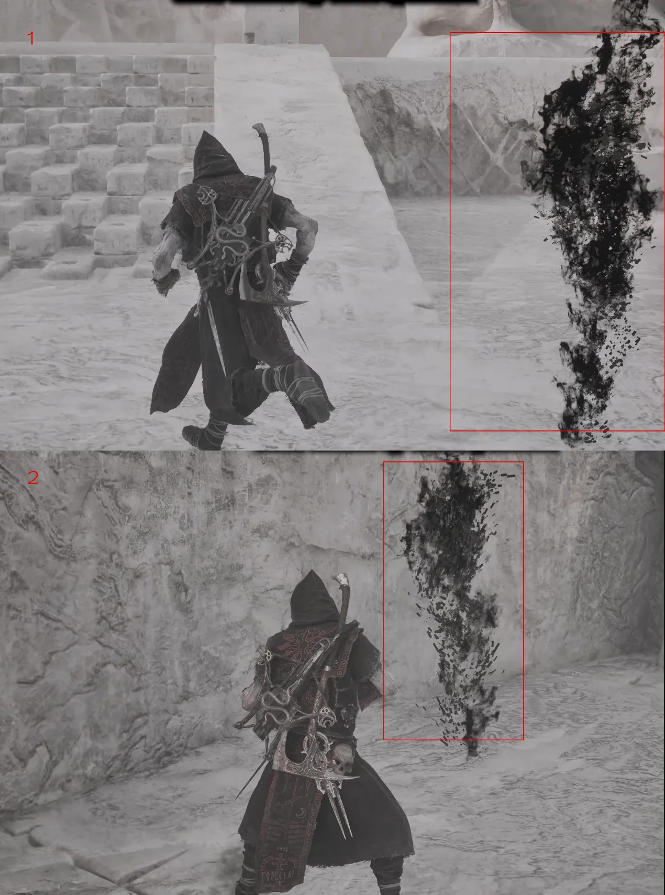
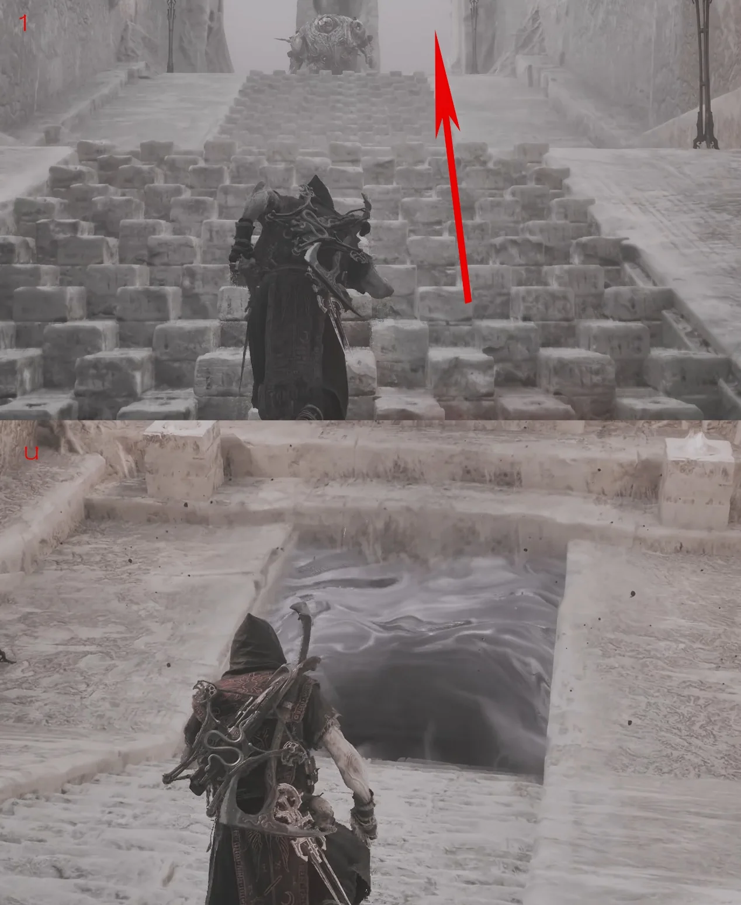
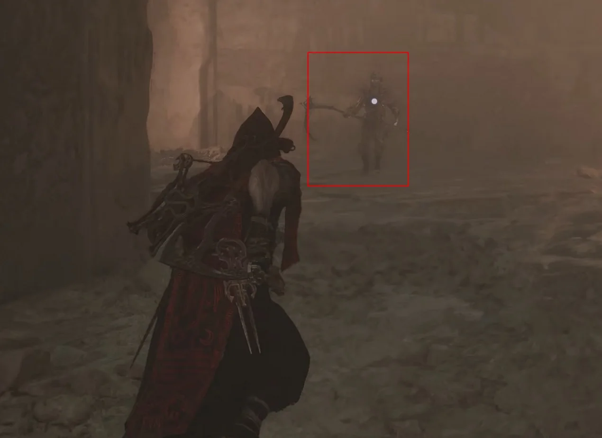
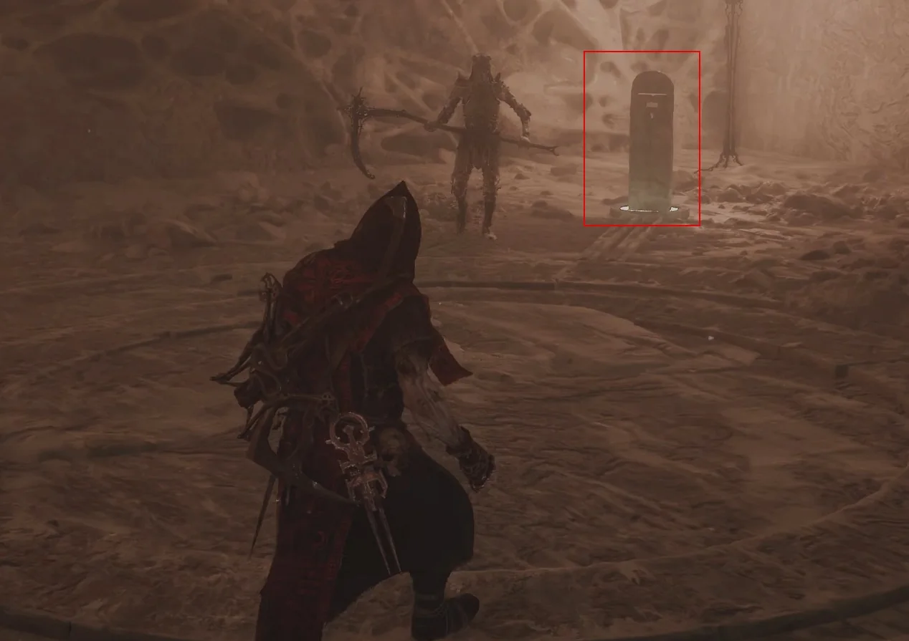
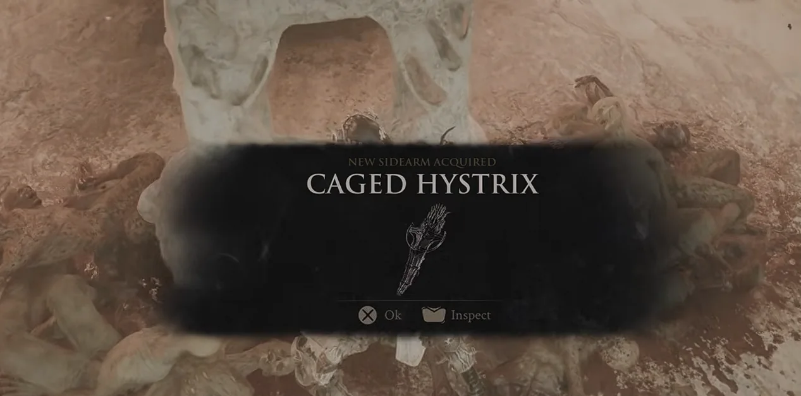

Caged Hystrix is found after the Sariel sequence in the Chamber of Becoming. The route begins at The Silent Steps Beacon and follows the portal path to the sealed door.
Region
Mammon
Location
Chamber of Becoming
Type
Sidearm

Route 01Fast travel to The Silent Steps Beacon.Route 02Go through the portal and turn left onto the marked platform.Route 03Defeat Sariel at the first encounter, then follow the smoke trail that appears.

Route 04The stone door on the route opens automatically after the encounter. Go through it.

Route 05Continue along the stairs and into the Chamber of Becoming route.

Route 06Follow the marked path through the chamber; nearby enemies can be bypassed while you proceed to Sariel's sequence.

Route 07During the final Sariel encounter, destroy the four corner obelisks so the fight can conclude.

Route 08After the sequence, collect Caged Hystrix from the marked pickup.